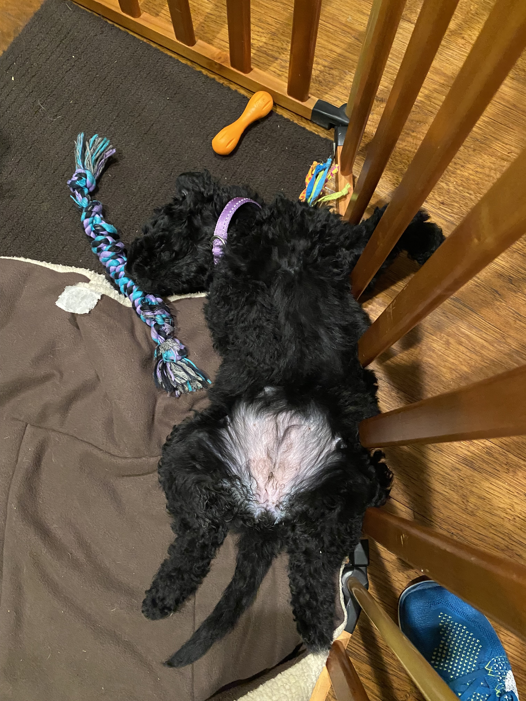
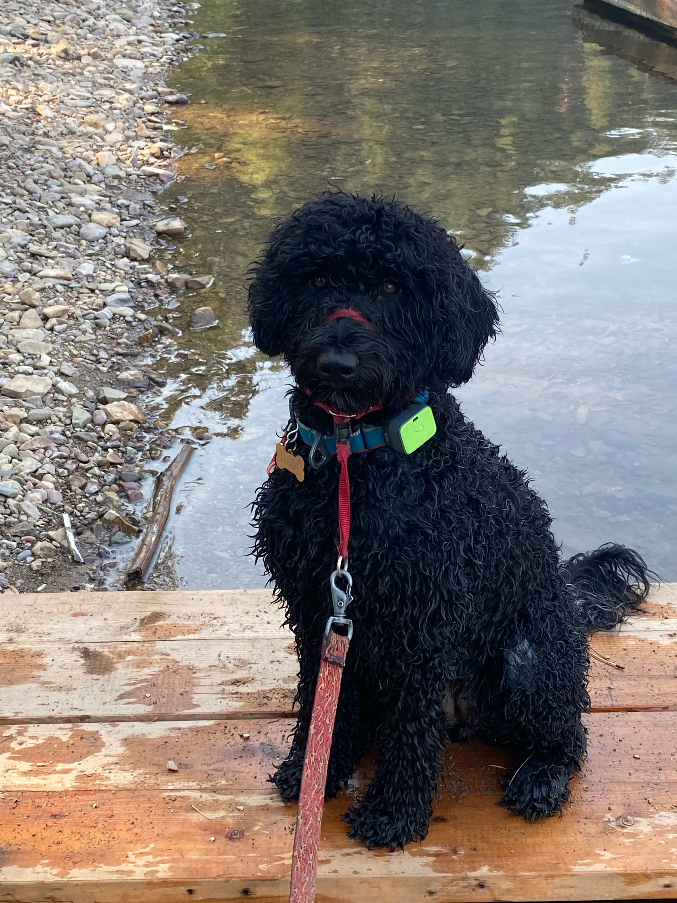
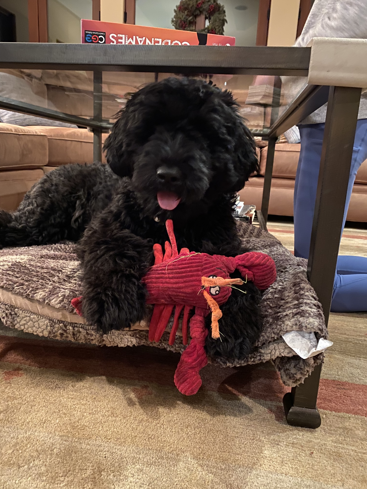

Me after swimming in Washington!
Me at the beach as a puppy!
Me under the table with my toy*.
Scroll down to learn more about me!
When I was born, I have a little white sock on my paw, so my owners decided to name me Dobby, after the house elf from Harry Potter, one of our favortie movies. I like to bark at Hagrid.
I am a Portuguese Water Dog, who were used to help fisherman drag nets in Portugal! I am black with little white hairs here and there. I am swirly coat, which is a mix between a curly and a wavey. If you want to learn more about my breed click here.
I am a very active dog, and live to swim and go on walks. I get one or two a day. My favorite toys are my squeaky pig and my lobster, Larry Seinor (RIP LARRY JUNIOR), which I can swing it around with its multiple claws and things. I sometimes get to go fun places like the beach, where I eat the sand, but don't go in thw water. The waves scare me.
|  | |
 |
Me after swimming in Washington! |
Me at the beach as a puppy! |
Me under the table with my toy*. |
*I love sitting under the table and chewing up my toys.
1. Me inside with Daddy and my squeaky toy!
2. Me outside with Daddy!